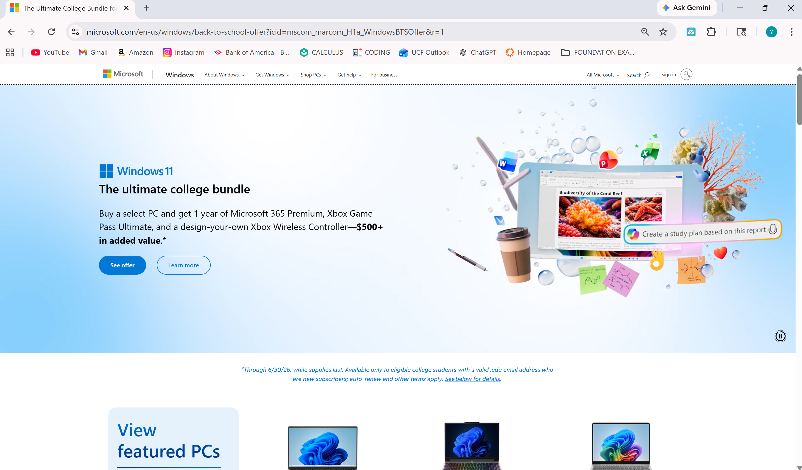
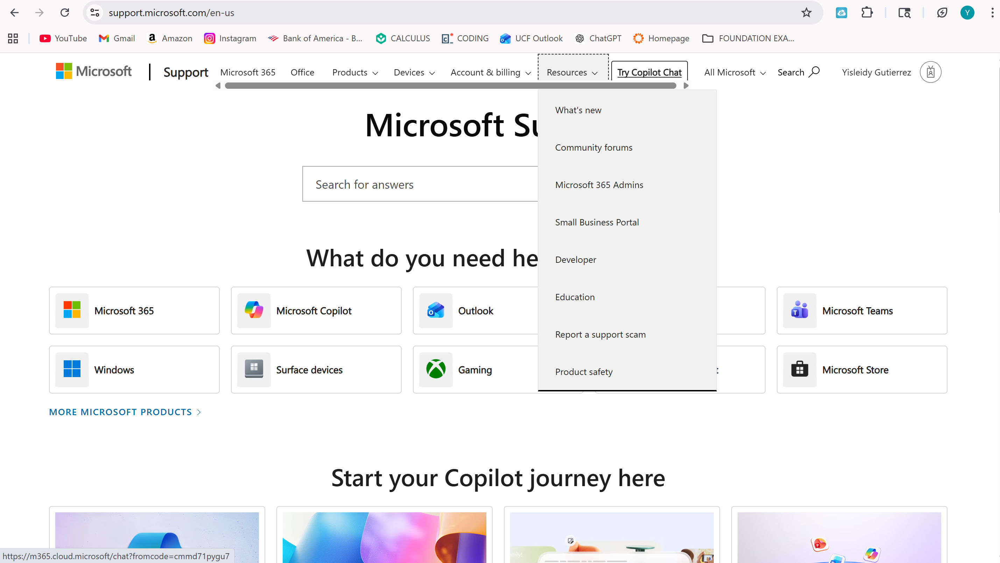
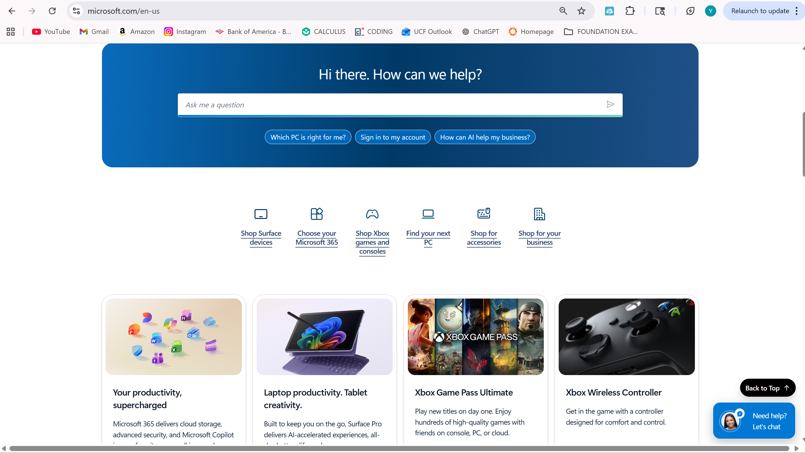

The following content inventory organizes the Microsoft content selected for this audit by source, content type, channel, publication context, and assessment criteria.
| Content Source | Content Type | Content Channel | Publication Context | Purpose | Readability | Usability | Accessibility |
|---|---|---|---|---|---|---|---|
| Microsoft homepage | Product / marketing page | Microsoft website | Current public webpage | Promotes products and services to a broad audience | Clear headings and simple wording | Easy navigation and visually structured layout | Strong visual hierarchy and readable design |
| Microsoft Learn page | Documentation / tutorial | Microsoft Learn platform | Current public webpage | Provides structured learning for users and developers | Organized with headings and step-by-step instructions | Supports technical learning through modular content | Designed for both beginners and advanced users |
| Microsoft Support article | Support / help article | Microsoft Support | Current public support page | Helps users troubleshoot and resolve issues | Plain language and direct instructions | Provides clear solutions, though some pages are lengthy | Accessible structure, but length may impact usability |
This content audit will examine the public-facing communication system of Microsoft across multiple digital platforms, including its main website, Microsoft Learn, and Microsoft Support. Instead of analyzing individual documents, this report considers how different content types work together as part of a larger, interconnected network of communication. More specifically, the purpose of this audit is to evaluate how Microsoft develops and maintains its content to meet the needs of a board audience. It will answer two central questions, how does microsoft's content reflect its communication priorities, and how they represent Microsoft's underlying values. By analyzing key content types across multiple channels, this audit report highlights how Microsoft balances accessibility, usability, and technical depth while guiding users through different stages of engagement.

At first glance, the content produced by Microsoft appears clean, organized, and easy to navigate. It especially looks very user friendly and essentially follows consistent layouts that guide users through content efficiently. These surface level features suggests a strong focus on usability and accessibility. A closer analysis reveals that Microsoft's content is carefully structured to support different user needs across multiple platforms.
The homepage prioritizes quick engangement for a general audience, while the Microsoft learn page provides detailed steps for more technical users. Across all platforms, readability is maintained through clear formatting and organized sections, however some support articles can be quite lengthy and may reduce the efficiency for users who might be in search for quick answers.

Microsoft's content is authoritative because it is produced by an official, globally recognized technology organization with extensive expertise in the field. The information is developed by professionals an has a positive established industry reputation, reinforcing the authority of its content.
Its content is credible and presented in a consistent, professional, clear and accurate manner. The inclusion of detailed guides and official support resources strengthens user trust in the information that is provides.
The content is highly relevant to user needs. The homepage focuses on product awareness and pretty much a little bit of everything, the microsoft learn focuses on technical skill development, and the support pages adress troubleshooting. Each content type serves a specific purpose.
Overall, Microsoft's content system demostrates a calculated balance between simplicity and depth, adapting its structure and presentation to meet the needs of diverse audiences, while maintaining a unified communication strategy. Interaction design also contributes to the effictiveness of Microsoft's interconnected content system, as this enhances engagement and allows users to move efficiently between the different types of content offered.
Overall, Microsoft's content system is highly effective in supported a wide range of user needs through clear organization, strong usability and strucutre. The integration of marketing, educational, and support content demonstrates a very clear communication priority; to guide users from little to none initial knowledge to a deeper understanding and problem resolution. It also allows users to feel in a way, directly integrated with the products it offers by offering full transparency. The anaalysis revealed that Microsoft prioritizes clarity and accesibility. It also demonstrates that Microsoft's content reflects broader organizational values such as innovation, user empowerment, and inclusivity as users are given the tools and resources to learn and independently work with the products that are offered. While the Microsoft website is near perfect, there are some areas for potential improvement. Firstly, the support articles are lengthy and this can reduce efficieny for users seeking a quick answer. Secondly, some of the technical content can be quite challenging for beginners without additional guidance or more simplified explanations. Despite these minor issues, Microsoft's content demonstrates a well developed website with a strategic approach to communication. In conclusion, Microsoft's content demonstrates how professional communication systems can be designed to support multiple audiences and goals. By integrating so many different types of content, Microsoft creates a personalized experience that reflects its communication, organizational, and individual values. This audit report highlights the importance of structured content, usability, and accessibility in a real world technical environment.

| Category | Interpretation of Findings |
|---|---|
| Content System Integration | The homepage, Microsoft Learn, and Support content work together to guide users from product awareness to learning and troubleshooting, forming a connected communication system. |
| Communication Priorities | Microsoft prioritizes clarity, usability, and structured guidance, as shown through consistent formatting, simple language, and organized navigation across platforms. |
| Organizational Values | The content reflects values of accessibility, innovation, and user empowerment by supporting users at different skill levels and encouraging independent learning. |
| Strengths | Strong readability and usability across all content types, with clear structure and consistent design that supports a wide range of users. |
| Areas for Improvement | Support content can be lengthy, and technical material on Microsoft Learn may be difficult for beginners without additional simplification. |